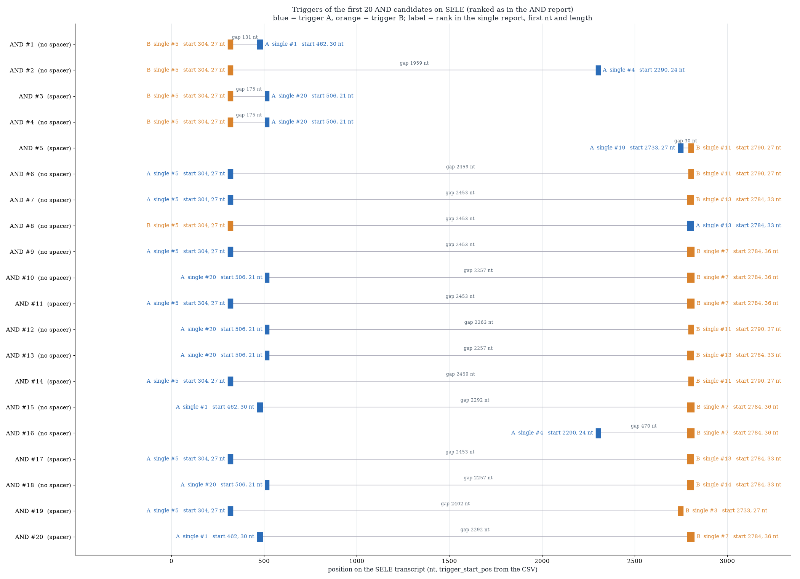

CERNAL · AND gate · eukaryotes
An AND gate should make its protein only when two chosen RNAs are both present. We place two RNA hairpins in series in front of one payload, and we built a model that predicts, before anything is made, which pairs open for both inputs and stay shut for everything else.
The model folds each candidate alone, with each trigger, with both and with wrong triggers, draws thousands of structures from the equilibrium ensemble, and measures how far both hairpins open together. Start with the mechanism and the sampling method, then the evidence, what the model changed and what remains open. No AND construct has been experimentally validated.
For iGEM judges: questions and evidence
How impressive is the modeling or computational approach?
Each AND candidate is folded in four states plus 5 mismatched-trigger controls, with 2000 structures sampled per state from the exact Boltzmann ensemble, twice with independent seeds. Every sampled state is checked against the exact base-pair-probability matrix (126 of 126 candidates passed in every state; 629 of 630 control states), and nothing is filtered or repaired when a check fails. The ranking carries its own uncertainty: candidates within 0.50 points of the best are reported as a tied group, not ranked against each other.
Did the model or computational approach help the team understand, predict, or design a part, device, or system?
It narrowed 800 possible constructs to 126 that survive the screens, and to a shortlist of 8. The upstream-AUG screen removed 450 of the 576 constructs that reached it, each with an AUG ahead of the payload’s start codon. It also showed where the gate leaks: in all 126 candidates the worst OFF state is one trigger partly opening the other hairpin, never the bare construct or a mismatched trigger.
Did the team use experimental or other relevant data to develop, train, or validate the model or computational approach?
Not yet. No AND construct has been measured, so no experimental data was used to fit or validate this model. The inputs are real NucSyn switch designs for a real target gene, and the sampler is checked against the exact pair-probability matrix, but that is an internal consistency check, not an experiment.
Does the modeling or computational approach provide a good example for others?
Every definition (Open, ON, OFF, the controls, the tie rule) is written out with its formula, every parameter is listed, and the mistakes we made on the way are documented under what the model changed. The method needs only a multi-strand partition-function engine, so it applies to any two-input RNA gate.
1. The question and the construct
A toehold switch is an RNA hairpin that hides the ribosome-binding region in its stem. A trigger RNA that pairs with the exposed single-stranded toehold unzips the stem and lets translation begin [1]. Our eukaryotic variant places a Kozak context after the stem [4]. Two such hairpins in front of one payload make an AND, but only if each opens for its own trigger and not for the other’s.
Open together
Both stems, one structureThe payload is released only when both hairpins are open in the same structure, each relative to its own length.
Shut otherwise
Alone, one trigger, wrong triggersOFF is the largest joint opening over the states in which the gate should stay closed, including mismatched triggers.
Honest ranking
Noise is part of the answerCandidates within the seed-to-seed noise of the best are reported as a tied group, not ranked against each other.
One construct, two intended states
Hairpin A is the first design up to its own Kozak; hairpin B is the second design after its own prefix.
Notation
| Symbol | Meaning | Units or range |
|---|---|---|
| A, B | The 5′ and 3′ hairpin of the fused construct; trigger A targets hairpin A, trigger B hairpin B. | — |
| stem↑, stem↓ | The 5′ and 3′ sides of a hairpin stem, each L nt long. | L = 12, 15, 18 or 21 nt |
| open nucleotide | A stem↑ nucleotide not paired to a stem↓ nucleotide of its own hairpin in a structure. | — |
| kh(s) | Number of open nucleotides of hairpin h in structure s. | nt |
| rh(s) | Longest run of consecutive open nucleotides of hairpin h in s; rh ≤ kh. | nt |
| Open | Expected joint opening of both hairpins, each relative to its own stem. | 0–1 |
| ON, OFF | 100 · Open of the +A+B state; 100 · the largest Open over alone, +A, +B and the controls. | % |
| control | The same construct folded with two mismatched triggers in place of A and B. | — |
| tied group (*) | Candidates within the seed-to-seed noise of the best ON − OFF. | — |
| ΔG | Ensemble free-energy gain of the +A+B complex over the most stable state that lacks a trigger. | kcal/mol |
2. How a construct is scored
A stem↑ nucleotide is open if it is not paired to a stem↓ nucleotide of its own hairpin; it may be unpaired or bound to a trigger. For a structure s, hairpin h has a longest run rh(s) of consecutive open nucleotides. The AND works when both hairpins are open at once, so for each sampled structure we take the smaller of the two runs, each as a fraction of its own stem, and average over the ensemble.
ON and OFF use the same quantity, so ONmin − OFF compares like with like, and candidates are ranked by it. In +A hairpin A is meant to open, so the minimum is small unless hairpin B opens too; that is how cross-talk enters OFF. Normalising by each hairpin’s own stem matters: with stems of 21 and 12 nt, “A open for 12 of 21, B fully open” would score 100% if runs were compared in nucleotides, and scores 57% per hairpin.
Which states define ON and which define OFF
Four states of every candidate, plus mismatched-trigger controls.
Controls
To check that Open responds only to the right triggers, every candidate is also folded in 5 control states, each with two mismatched triggers: real triggers of other designs that share at most 8 nt of identical sequence with either real trigger. Control is the largest Open among them.
Screens before folding, and the tied group
Pairs are dropped when the two triggers share a longest identical or complementary run above 8 nt (complementary runs tolerate G·U wobble up to 50%). Constructs are dropped when an AUG begins before the second hairpin’s stem↓, because it would compete with the payload’s start codon. A spacer, if used, is the candidate from a seeded pool of 150 A/U-biased sequences (15–20 nt) with the shortest complementary run against the two toeholds and two triggers. Candidates within the 95th percentile of the seed-to-seed change of ONmin − OFF (0.50 points) of the best form a tied group (*), ordered inside it by ΔG.
| Quantity | Definition | How obtained |
|---|---|---|
| Open | Mean over structures of min(rA/LA, rB/LB): both stems open at once, each relative to its own length. | 2000 sampled structures per state. |
| ONmin | 100 · Open of the +A+B state. | Sampled. |
| OFF | 100 · the largest Open over alone, +A, +B and the controls. | Sampled; the same rule as ON. |
| E[k] | Exact mean number of open nucleotides of one hairpin, L − Σ p(i, j) over stem↑ × stem↓. | Exact pair-probability matrix; used only to check the sampler. |
| ΔG | G+A+B − min(Galone + GA + GB, G+A + GB, G+B + GA). | Ensemble free energies; concentration not included. Orders the tied group only. |
All run parameters
| Parameter | Value | Role |
|---|---|---|
| Temperature, salt | 37 °C, 0.1 M monovalent, no Mg | One condition for every fold. |
| Samples per state | 2000 | Structures drawn from the Boltzmann ensemble. |
| Seeds | 1 and 1001 | The second, independent run measures the noise only. |
| Designs scored / fused | 150 / top 20 | NucSyn table rows scored; best designs fused in all ordered pairs. |
| Controls | 5 per candidate | States with two mismatched triggers; mismatched = at most 8 nt identity with either real trigger. |
| Trigger-pair screen | 8 nt, ≤ 50% G·U | Longest identical or complementary run allowed between trigger A and B. |
| Spacer | 15–20 nt, pool of 150, seed 1 | A/U-biased random pool; the best candidate is chosen per pair. |
| Upstream-AUG screen | on | Drops constructs with an AUG before the second stem↓. |
| Sampler check | 4 sd/√N + 0.02 nt | Tolerance between sampled and exact E[k]. |
3. How the structures are sampled
The AND works only if both stems are open in the same structure. An exact matrix of pair probabilities gives, for each position, how often it is paired, but not whether two regions are open together, because the marginals do not say how the events are correlated. So we draw whole structures from the equilibrium ensemble with ViennaRNA and measure the joint event on each one.
Five steps, repeated for every state of every candidate
Strands, partition function, draws, measurement, average; an exact check runs alongside.
1. The partition function
For each state the strands are joined with “&” (the molecules stay separate, they are not covalently joined) and ViennaRNA computes the partition function Z, the sum of Boltzmann weights over every structure the strands can form. The energy model, temperature (37 °C) and salt (0.1 M monovalent, no magnesium) are the same as in every other calculation of the pipeline. One setting differs for sampling: ViennaRNA needs its unique-multiloop-decomposition option switched on for stochastic backtracking, and that is the only override.
2. Drawing structures
Stochastic backtracking walks back through the partition-function recursion and picks each decision with its Boltzmann probability, so a structure s comes out with probability:
where G is the free energy of the whole ensemble. 2000 structures are drawn per state. They are independent and already distributed as P(s), so no re-weighting is needed: an average over the draws estimates the ensemble average. ViennaRNA can occasionally drop a draw on a numerically awkward multiloop, so every mean divides by the number of structures actually returned, not by 2000.
3. The strand order
The order in which the strands are written matters for the sampler: for some complexes one order draws structures from the wrong ensemble, with most draws far above the ensemble’s energy. We therefore rotate the strands so that the trigger sits next to the hairpin it targets, and map every structure back to the original order afterwards. A rotation keeps the structure nested, so it stays representable.
| State | Strands | Written first | Why |
|---|---|---|---|
| alone | fused | fused | A single strand. |
| +A | fused & trigger A | trigger A | Hairpin A is the 5′ hairpin. |
| +B | fused & trigger B | fused | Hairpin B is the 3′ hairpin. |
| +A+B, controls | fused & trigger B & trigger A | trigger A | The other order, fused & A & B, makes the two duplexes cross (a pseudoknot) and trigger B cannot bind. |
4. Seeds and reproducibility
ViennaRNA’s random generator is shared by the whole process. The pipeline seeds it and draws under one lock, so seeded draws never interleave and a rerun with the same seed repeats exactly. Seed 1 gives the reported values. A second, independent run with seed 1001 measures the noise: the seed-to-seed change of ONmin − OFF has a median of 0.14 and a 95th percentile of 0.50 points, and that band defines the tied group.
5. Measuring each structure
A structure is read as a dot-bracket string. For each hairpin we take the number k of open stem↑ nucleotides and the longest run r of consecutive open ones. Per structure we compute min(rA/LA, rB/LB), which is 1 only when both stems are fully open at once, and Open is its mean over the draws.
6. Checking the draws against the exact matrix
The same partition function gives the exact pair-probability matrix, and from it the exact mean number of open nucleotides per hairpin. The sampled mean of k must agree with it within 4 sd/√N + 0.02 nt (the small constant keeps a nearly closed state, whose draws have sd = 0, from failing on a rare missed opening). In this run 126 of 126 candidates passed in every state, and 629 of 630 control states. The check is only reported: nothing is dropped, corrected or re-drawn when it fails. The matrix cannot give Open itself, because Open is a joint quantity of runs, so the check covers per-nucleotide openness, not the runs.
4. Results
8 of 126 candidates are indistinguishable from the best. Of 800 possible constructs, 40 were self-pairs, 184 had triggers that were too similar and the upstream-AUG screen removed 450 of the 576 that remained. With both triggers the stems open together in 99.7% of the ensemble (median); without them they stay almost shut.
These are in-silico predictions from one run. No AND construct has been measured, so ON and OFF rank computational designs and are not measured expression or a measured ON/OFF ratio.
Most candidates open fully and stay shut
Almost every candidate sits at ON above 99% and OFF below 3%
All candidates; the ON axis is zoomed on 95–100% with a break below.
| Group | Candidates |
|---|---|
| ONmin − OFF ≥ 95 | 116 / 126 |
| ONmin − OFF < 95 | 10 / 126 |
| lowest ONmin | 55.2% |
| highest OFF | 12.6% |
The best candidates cannot be told apart
The seed-to-seed change of ONmin − OFF has a median of 0.14 and a 95th percentile of 0.50 points. 8 candidates lie within that band of the best (99.37 points), made of 6 different hairpin pairs (6 without a spacer, 2 with one). Any of them is as good as the others by this score; the order inside the group is by ΔG, which slightly favours less stable switches.
The curve is flat at the top and falls away in the last candidates
ONmin − OFF of all candidates, best first.
| ONmin − OFF | Value, points |
|---|---|
| best | 99.37 |
| median | 98.03 |
| worst | 54.24 |
| noise band (95th percentile) | 0.50 |
| candidates ≥ 95 | 116 / 126 |
| # | Single ranks A + B | Spacer | LA / LB, nt | ONmin, % | OFF, % | ONmin − OFF | ΔG, kcal/mol |
|---|---|---|---|---|---|---|---|
| 1 | 1 + 5 * | none | 18 / 18 | 99.5 | 0.52 | 98.95 | -17.6 |
| 2 | 4 + 5 * | none | 12 / 18 | 99.5 | 0.63 | 98.91 | -16.5 |
| 3 | 20 + 5 * | spacer | 12 / 18 | 99.8 | 0.63 | 99.20 | -16.2 |
| 4 | 20 + 5 * | none | 12 / 18 | 99.9 | 0.50 | 99.37 | -16.1 |
| 5 | 19 + 11 * | spacer | 12 / 12 | 99.9 | 0.75 | 99.19 | -14.3 |
| 6 | 5 + 11 * | none | 18 / 12 | 99.9 | 0.79 | 99.09 | -14.3 |
| 7 | 5 + 13 * | none | 18 / 18 | 99.7 | 0.52 | 99.22 | -13.7 |
| 8 | 13 + 5 * | none | 18 / 18 | 99.5 | 0.60 | 98.94 | -13.6 |
| 9 | 5 + 7 | none | 18 / 21 | 99.7 | 0.85 | 98.87 | -16.2 |
| 10 | 20 + 7 | none | 12 / 21 | 99.8 | 0.91 | 98.86 | -16.7 |
What sets OFF: cross-talk between the inputs
In none of the 126 candidates is OFF set by the bare construct or by a mismatched-trigger control. In 56 it is set by +A (trigger A also partly opens hairpin B) and in 70 by +B (trigger B partly opens hairpin A). The mismatched controls reach at most 1.8% (median 0.15%), so the stems are well protected against unrelated triggers; the weak point is the pair’s own triggers acting on each other’s hairpin.
One trigger opening the other hairpin is the leak
Number of candidates whose OFF is set by each state.
| State setting OFF | Candidates | Share |
|---|---|---|
| +A: trigger A also opens hairpin B | 56 / 126 | 44.4% |
| +B: trigger B also opens hairpin A | 70 / 126 | 55.6% |
| alone or a mismatched control | 0 / 126 | 0% |
A spacer is not needed
59 of the 126 candidates carry a spacer; the median ONmin − OFF is 97.9 with one and 98.1 without. 6 of the 8 tied candidates have none, so on this evidence a spacer is not needed to reach the top.
Candidates with and without a spacer overlap almost completely
ONmin − OFF by spacer variant.
| Variant | Candidates | In tied group | Median ONmin − OFF |
|---|---|---|---|
| no spacer | 67 | 6 | 98.1 |
| spacer | 59 | 2 | 97.9 |
Structure and position of the top candidate
Candidate 1: singles 1 + 5, no spacer
Predicted structure of the top candidate, alone and with both triggers.
Where the triggers sit on the target transcript
First 20 candidates, drawn from the run.

All 126 candidates
| # | Single ranks A + B | Spacer | LA / LB, nt | ONmin, % | OFF, % | ONmin − OFF | ΔG, kcal/mol | OFF set by |
|---|---|---|---|---|---|---|---|---|
| 1 | 1 + 5 * | none | 18 / 18 | 99.5 | 0.52 | 98.95 | -17.6 | +B |
| 2 | 4 + 5 * | none | 12 / 18 | 99.5 | 0.63 | 98.91 | -16.5 | +B |
| 3 | 20 + 5 * | spacer | 12 / 18 | 99.8 | 0.63 | 99.20 | -16.2 | +A |
| 4 | 20 + 5 * | none | 12 / 18 | 99.9 | 0.50 | 99.37 | -16.1 | +A |
| 5 | 19 + 11 * | spacer | 12 / 12 | 99.9 | 0.75 | 99.19 | -14.3 | +A |
| 6 | 5 + 11 * | none | 18 / 12 | 99.9 | 0.79 | 99.09 | -14.3 | +A |
| 7 | 5 + 13 * | none | 18 / 18 | 99.7 | 0.52 | 99.22 | -13.7 | +A |
| 8 | 13 + 5 * | none | 18 / 18 | 99.5 | 0.60 | 98.94 | -13.6 | +B |
| 9 | 5 + 7 | none | 18 / 21 | 99.7 | 0.85 | 98.87 | -16.2 | +A |
| 10 | 20 + 7 | none | 12 / 21 | 99.8 | 0.91 | 98.86 | -16.7 | +A |
| 11 | 5 + 7 | spacer | 18 / 21 | 99.7 | 0.90 | 98.84 | -14.0 | +A |
| 12 | 20 + 11 | none | 12 / 12 | 99.6 | 0.80 | 98.83 | -14.3 | +A |
| 13 | 20 + 13 | none | 12 / 18 | 99.3 | 0.48 | 98.82 | -13.7 | +A |
| 14 | 5 + 11 | spacer | 18 / 12 | 99.8 | 0.99 | 98.80 | -14.0 | +A |
| 15 | 1 + 7 | none | 18 / 21 | 99.7 | 0.89 | 98.78 | -16.5 | +A |
| 16 | 4 + 7 | none | 12 / 21 | 99.8 | 1.11 | 98.70 | -15.8 | +B |
| 17 | 5 + 13 | spacer | 18 / 18 | 99.2 | 0.57 | 98.66 | -13.6 | +A |
| 18 | 20 + 14 | none | 12 / 21 | 99.5 | 0.88 | 98.64 | -13.1 | +B |
| 19 | 5 + 3 | spacer | 18 / 12 | 99.8 | 1.21 | 98.63 | -16.1 | +A |
| 20 | 1 + 7 | spacer | 18 / 21 | 99.4 | 0.84 | 98.61 | -15.2 | +B |
| 21 | 20 + 4 | spacer | 12 / 12 | 99.8 | 1.25 | 98.57 | -19.1 | +A |
| 22 | 5 + 14 | none | 18 / 21 | 99.5 | 0.90 | 98.56 | -13.1 | +A |
| 23 | 20 + 3 | none | 12 / 12 | 99.9 | 1.34 | 98.56 | -20.1 | +A |
| 24 | 20 + 7 | spacer | 12 / 21 | 99.8 | 1.29 | 98.54 | -16.2 | +B |
| 25 | 4 + 3 | spacer | 12 / 12 | 99.7 | 1.15 | 98.51 | -14.4 | +A |
| 26 | 13 + 5 | spacer | 18 / 18 | 99.8 | 1.37 | 98.44 | -17.9 | +B |
| 27 | 5 + 19 | spacer | 18 / 12 | 99.8 | 1.39 | 98.43 | -16.1 | +A |
| 28 | 18 + 5 | spacer | 12 / 18 | 99.8 | 1.39 | 98.42 | -10.9 | +B |
| 29 | 5 + 8 | spacer | 18 / 12 | 99.8 | 1.42 | 98.40 | -15.2 | +A |
| 30 | 13 + 1 | none | 18 / 18 | 99.5 | 1.11 | 98.38 | -14.1 | +A |
| 31 | 1 + 11 | none | 18 / 12 | 99.6 | 1.19 | 98.37 | -14.3 | +B |
| 32 | 4 + 20 | none | 12 / 12 | 99.7 | 1.34 | 98.35 | -18.6 | +B |
| 33 | 20 + 4 | none | 12 / 12 | 99.7 | 1.35 | 98.35 | -19.3 | +A |
| 34 | 5 + 4 | none | 18 / 12 | 99.6 | 1.27 | 98.33 | -15.8 | +A |
| 35 | 1 + 4 | none | 18 / 12 | 99.5 | 1.15 | 98.33 | -19.3 | +A |
| 36 | 1 + 8 | none | 18 / 12 | 99.7 | 1.37 | 98.33 | -16.1 | +A |
| 37 | 20 + 8 | spacer | 12 / 12 | 99.9 | 1.62 | 98.31 | -16.1 | +B |
| 38 | 5 + 3 | none | 18 / 12 | 99.7 | 1.43 | 98.29 | -16.3 | +A |
| 39 | 5 + 8 | none | 18 / 12 | 99.8 | 1.55 | 98.28 | -15.5 | +A |
| 40 | 4 + 19 | none | 12 / 12 | 99.7 | 1.44 | 98.28 | -18.7 | +B |
| 41 | 20 + 18 | spacer | 12 / 12 | 99.7 | 1.47 | 98.28 | -13.3 | +A |
| 42 | 20 + 8 | none | 12 / 12 | 99.9 | 1.66 | 98.28 | -16.1 | +A |
| 43 | 19 + 4 | none | 12 / 12 | 99.8 | 1.53 | 98.27 | -19.4 | +B |
| 44 | 13 + 20 | none | 18 / 12 | 99.8 | 1.56 | 98.27 | -14.4 | +B |
| 45 | 17 + 11 | spacer | 15 / 12 | 99.8 | 1.55 | 98.26 | -14.3 | +B |
| 46 | 4 + 8 | spacer | 12 / 12 | 99.5 | 1.26 | 98.24 | -15.9 | +B |
| 47 | 20 + 3 | spacer | 12 / 12 | 99.9 | 1.64 | 98.23 | -19.2 | +A |
| 48 | 20 + 17 | none | 12 / 15 | 99.9 | 1.64 | 98.23 | -15.7 | +A |
| 49 | 13 + 4 | spacer | 18 / 12 | 99.8 | 1.55 | 98.23 | -14.8 | +B |
| 50 | 20 + 19 | spacer | 12 / 12 | 99.8 | 1.59 | 98.22 | -19.2 | +A |
| 51 | 19 + 11 | none | 12 / 12 | 99.7 | 1.45 | 98.22 | -14.3 | +B |
| 52 | 13 + 4 | none | 18 / 12 | 99.4 | 1.23 | 98.21 | -13.7 | +A |
| 53 | 4 + 19 | spacer | 12 / 12 | 99.6 | 1.35 | 98.20 | -14.4 | +A |
| 54 | 17 + 18 | spacer | 15 / 12 | 99.8 | 1.62 | 98.16 | -14.1 | +A |
| 55 | 20 + 19 | none | 12 / 12 | 99.7 | 1.57 | 98.16 | -20.1 | +A |
| 56 | 5 + 18 | spacer | 18 / 12 | 99.8 | 1.62 | 98.15 | -13.8 | +A |
| 57 | 4 + 18 | none | 12 / 12 | 99.4 | 1.26 | 98.15 | -12.9 | +B |
| 58 | 1 + 13 | none | 18 / 18 | 99.4 | 1.22 | 98.14 | -13.7 | +B |
| 59 | 1 + 3 | none | 18 / 12 | 99.6 | 1.45 | 98.12 | -20.1 | +A |
| 60 | 5 + 18 | none | 18 / 12 | 99.9 | 1.80 | 98.10 | -13.8 | +A |
| 61 | 4 + 8 | none | 12 / 12 | 99.7 | 1.62 | 98.07 | -15.4 | +B |
| 62 | 19 + 5 | none | 12 / 18 | 99.8 | 1.74 | 98.05 | -17.7 | +B |
| 63 | 20 + 17 | spacer | 12 / 15 | 99.7 | 1.69 | 98.04 | -15.5 | +A |
| 64 | 20 + 11 | spacer | 12 / 12 | 99.4 | 1.37 | 98.02 | -13.1 | +B |
| 65 | 5 + 20 | none | 18 / 12 | 99.7 | 1.69 | 98.01 | -17.0 | +A |
| 66 | 5 + 20 | spacer | 18 / 12 | 99.8 | 1.82 | 98.00 | -15.3 | +A |
| 67 | 5 + 17 | spacer | 18 / 15 | 99.9 | 1.88 | 98.00 | -15.4 | +A |
| 68 | 1 + 17 | none | 18 / 15 | 99.5 | 1.54 | 97.97 | -15.7 | +A |
| 69 | 13 + 1 | spacer | 18 / 18 | 99.6 | 1.61 | 97.97 | -15.9 | +B |
| 70 | 4 + 18 | spacer | 12 / 12 | 99.5 | 1.53 | 97.95 | -11.6 | +A |
| 71 | 1 + 19 | none | 18 / 12 | 99.5 | 1.59 | 97.91 | -20.0 | +A |
| 72 | 5 + 17 | none | 18 / 15 | 99.8 | 1.90 | 97.91 | -15.5 | +A |
| 73 | 4 + 7 | spacer | 12 / 21 | 99.5 | 1.64 | 97.88 | -15.7 | +B |
| 74 | 1 + 14 | none | 18 / 21 | 99.0 | 1.13 | 97.87 | -13.1 | +B |
| 75 | 5 + 19 | none | 18 / 12 | 99.7 | 1.80 | 97.85 | -16.3 | +A |
| 76 | 18 + 17 | spacer | 12 / 15 | 99.7 | 1.89 | 97.85 | -12.4 | +A |
| 77 | 5 + 14 | spacer | 18 / 21 | 99.0 | 1.14 | 97.82 | -12.9 | +A |
| 78 | 4 + 3 | none | 12 / 12 | 99.4 | 1.62 | 97.79 | -18.7 | +B |
| 79 | 4 + 11 | none | 12 / 12 | 99.2 | 1.44 | 97.78 | -14.3 | +B |
| 80 | 20 + 18 | none | 12 / 12 | 99.8 | 2.00 | 97.78 | -14.4 | +A |
| 81 | 4 + 17 | none | 12 / 15 | 99.5 | 1.69 | 97.77 | -15.0 | +A |
| 82 | 5 + 1 | none | 18 / 18 | 99.5 | 1.79 | 97.71 | -17.0 | +A |
| 83 | 17 + 5 | spacer | 15 / 18 | 99.9 | 2.17 | 97.69 | -15.8 | +B |
| 84 | 17 + 4 | spacer | 15 / 12 | 99.9 | 2.20 | 97.68 | -15.8 | +B |
| 85 | 18 + 5 | none | 12 / 18 | 99.5 | 1.87 | 97.68 | -13.6 | +B |
| 86 | 18 + 4 | none | 12 / 12 | 99.3 | 1.67 | 97.65 | -13.6 | +B |
| 87 | 4 + 17 | spacer | 12 / 15 | 99.6 | 1.92 | 97.65 | -14.4 | +A |
| 88 | 19 + 18 | spacer | 12 / 12 | 99.8 | 2.23 | 97.59 | -13.7 | +B |
| 89 | 4 + 1 | none | 12 / 18 | 99.4 | 1.85 | 97.58 | -19.0 | +B |
| 90 | 1 + 18 | none | 18 / 12 | 99.4 | 1.87 | 97.55 | -14.2 | +A |
| 91 | 1 + 18 | spacer | 18 / 12 | 99.5 | 2.05 | 97.44 | -12.3 | +A |
| 92 | 4 + 13 | none | 12 / 18 | 99.0 | 1.66 | 97.34 | -13.6 | +B |
| 93 | 18 + 8 | none | 12 / 12 | 99.7 | 2.45 | 97.23 | -13.8 | +B |
| 94 | 17 + 4 | none | 15 / 12 | 99.8 | 2.57 | 97.22 | -15.9 | +B |
| 95 | 18 + 8 | spacer | 12 / 12 | 99.9 | 2.70 | 97.20 | -14.5 | +B |
| 96 | 18 + 19 | spacer | 12 / 12 | 99.8 | 2.65 | 97.13 | -14.5 | +B |
| 97 | 18 + 3 | none | 12 / 12 | 99.9 | 2.74 | 97.11 | -13.8 | +B |
| 98 | 17 + 5 | none | 15 / 18 | 99.7 | 2.58 | 97.10 | -15.9 | +B |
| 99 | 1 + 8 | spacer | 18 / 12 | 99.7 | 2.73 | 97.01 | -16.1 | +B |
| 100 | 4 + 14 | none | 12 / 21 | 98.6 | 1.68 | 96.96 | -12.9 | +B |
| 101 | 18 + 17 | none | 12 / 15 | 99.6 | 2.65 | 96.90 | -13.8 | +B |
| 102 | 18 + 19 | none | 12 / 12 | 99.7 | 2.89 | 96.80 | -13.8 | +B |
| 103 | 1 + 17 | spacer | 18 / 15 | 99.5 | 2.74 | 96.79 | -15.5 | +B |
| 104 | 19 + 18 | none | 12 / 12 | 99.8 | 3.04 | 96.77 | -13.9 | +B |
| 105 | 1 + 3 | spacer | 18 / 12 | 99.5 | 2.70 | 96.77 | -20.0 | +B |
| 106 | 18 + 4 | spacer | 12 / 12 | 99.6 | 2.87 | 96.76 | -11.7 | +B |
| 107 | 18 + 3 | spacer | 12 / 12 | 99.6 | 2.88 | 96.72 | -14.5 | +B |
| 108 | 18 + 1 | spacer | 12 / 18 | 99.6 | 2.94 | 96.65 | -15.1 | +B |
| 109 | 19 + 4 | spacer | 12 / 12 | 99.8 | 3.15 | 96.64 | -19.1 | +B |
| 110 | 1 + 19 | spacer | 18 / 12 | 99.4 | 2.82 | 96.63 | -19.9 | +B |
| 111 | 19 + 5 | spacer | 12 / 18 | 99.7 | 3.13 | 96.62 | -17.4 | +B |
| 112 | 19 + 1 | none | 12 / 18 | 99.5 | 3.12 | 96.41 | -20.7 | +B |
| 113 | 17 + 11 | none | 15 / 12 | 99.7 | 3.60 | 96.15 | -14.3 | +B |
| 114 | 18 + 1 | none | 12 / 18 | 99.5 | 3.88 | 95.62 | -14.1 | +B |
| 115 | 4 + 11 | spacer | 12 / 12 | 99.5 | 4.09 | 95.41 | -14.2 | +B |
| 116 | 4 + 13 | spacer | 12 / 18 | 99.5 | 4.32 | 95.15 | -13.5 | +B |
| 117 | 17 + 1 | none | 15 / 18 | 99.7 | 4.83 | 94.85 | -16.4 | +B |
| 118 | 17 + 18 | none | 15 / 12 | 99.7 | 4.89 | 94.85 | -14.4 | +B |
| 119 | 4 + 14 | spacer | 12 / 21 | 99.0 | 4.19 | 94.78 | -12.9 | +B |
| 120 | 20 + 13 | spacer | 12 / 18 | 95.7 | 1.44 | 94.27 | -12.5 | +B |
| 121 | 19 + 1 | spacer | 12 / 18 | 99.5 | 5.30 | 94.20 | -16.7 | +B |
| 122 | 20 + 14 | spacer | 12 / 21 | 93.0 | 1.27 | 91.73 | -12.0 | +B |
| 123 | 1 + 11 | spacer | 18 / 12 | 90.0 | 0.98 | 89.00 | -10.9 | +B |
| 124 | 17 + 1 | spacer | 15 / 18 | 99.7 | 12.61 | 87.04 | -10.9 | +B |
| 125 | 1 + 13 | spacer | 18 / 18 | 71.1 | 0.94 | 70.17 | -10.4 | +B |
| 126 | 1 + 14 | spacer | 18 / 21 | 55.2 | 0.94 | 54.24 | -10.0 | +B |
5. Try it: input in, gate out
Interactive simulation
Pick a candidate, add the inputs. Each bar is a stored result from the run for the chosen candidate; nothing is computed in your browser. Toggle the two trigger RNAs and read the joint opening of the stems.
6. What the model changed
Every definition on this page replaced a first version that gave a plausible but wrong number.
- The sampler’s strand order. Writing the strands in the wrong order gave draws with energy far above the ensemble’s. The strands are now rotated so the trigger sits next to its target hairpin, and every state is verified against the exact matrix.
- A sum hides a half-open gate. An earlier ON, the expected sum of the two open runs divided by both stems, scores 50% when only one hairpin opens, a gate that is not an AND. We now take the minimum of the two in every structure and normalise each by its own stem. The sum is still listed; the two orders agree here (rank correlation 0.985, 19 of the top 20 in common).
- Competing start codons. A construct with an AUG before the second hairpin’s stem↓ has a start codon ahead of the payload’s. The screen removed 450 of the 576 constructs that reached it, so most of the possible pairs were not usable.
7. What we can conclude, and what remains open
The designs have not been tested. The run identifies useful computational trade-offs and a shortlist of 8; it is not an experimental demonstration of an AND gate.
Model and sampling
Structure-based equilibrium prediction only: no kinetics, trigger concentration, translation or start-codon accessibility. Open is a structural proxy for the hairpins releasing the region behind them. The +A+B ensemble assumes the two-trigger complex has formed, and hairpin A’s gating of the payload is assumed, not modelled.
The sampler check covers per-nucleotide openness, not the longest runs. The tie threshold counts Monte-Carlo noise only; model error is larger, so candidates just outside the group are not clearly worse.
Evidence and scope
No experimental validation, and no sensitivity analysis over temperature, salt, the number of controls or the 8 nt cap. Controls are at most 5 mismatched-trigger pairs per candidate, with no scrambled triggers or known reference construct. Trigger self-structure, cross-talk between the triggers themselves and the openness of the stem↓ sides are not assessed.
The candidates recombine a few hairpins from a preselected pool, at 37 °C and 0.1 M salt without magnesium, and are not calibrated to a cell.
Next work and the decision each step resolves
| Step | Decision it resolves |
|---|---|
| Measure ON and OFF of the tied candidates | Whether the predicted ranking, and the claim that the best candidates are interchangeable, hold in a cell. |
| Sensitivity analysis of temperature, salt, controls and the 8 nt cap | Which conclusions are robust to the choices we declared rather than fitted. |
| Screen trigger pairs for cross-talk with the other hairpin’s footprint | Whether the dominant leak (one trigger opening the other hairpin) can be designed out. |
8. Computational tools and references
| Tool or source | Role | Interpretive boundary |
|---|---|---|
| ViennaRNA | Partition function, stochastic backtracking, base-pair probabilities and free energies. | Thermodynamic prediction at 37 °C and 0.1 M salt; no kinetics. |
| NucSyn ranked table | Eukaryotic open-5′ toehold switch designs for SELE. | Its own metrics are carried through, not re-derived. |
| Python / NumPy | Parallel sampling, measurement and the report. | Reproduction needs the same inputs, seeds and settings. |
References
[1] Green AA et al. (2014). Toehold switches: de-novo-designed regulators of gene expression. Cell 159, 925–939. Original switch design.
[2] McCaskill JS (1990). The equilibrium partition function and base pair binding probabilities for RNA secondary structure. Biopolymers 29, 1105–1119. Partition function.
[3] Lorenz R et al. (2011). ViennaRNA Package 2.0. Algorithms for Molecular Biology 6, 26. Thermodynamic software.
[4] Kozak M (1987). An analysis of 5′-noncoding sequences from 699 vertebrate messenger RNAs. Nucleic Acids Research 15, 8125–8148. Kozak context.